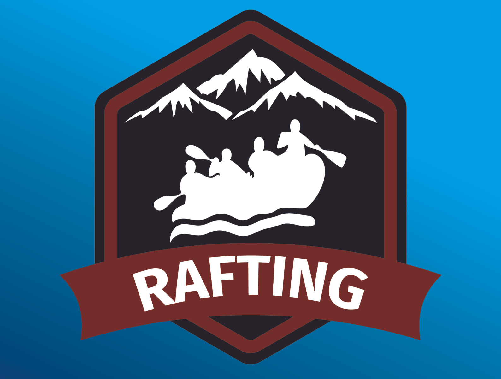

Overwiew
Purpose
Creating an online presence for the rafting business aims to reach more people and connect better with customers.The goal is to have a user-friendly website that effectively markets the exciting rafting adventures to a wider audience. The website provides detailed information about trips, safety measures, and allows easy online bookings. Through appealing visuals and customer reviews, the business wants to establish a trustworthy and credible image. The website also acts as a communication platform, allowing potential customers to ask questions, share feedback, and find important details. In simpler terms, having an online presence helps the business stand out, attract more customers, and make it easier for people to engage with the exciting world of rafting.
Audience
Our water rafting website is designed to cater to adventure enthusiasts seeking thrilling and memorable outdoor experiences. The primary target customers are individuals aged 18-45 with an interest in outdoor activities, including rafting. These adventure seekers are likely to have a moderate to high level of physical fitness, a passion for nature, and an adventurous spirit. Many of our customers may be urban dwellers looking to escape the routine and experience the excitement of water rafting. They are tech-savvy and are expected to access our website primarily through mobile devices or laptops. - What are the key interest of our target audience ? Our target audience is interested in outdoor adventures and thrives on activities that provide an adrenaline rush. They appreciate the beauty of nature, the challenge of physical activities, and the camaraderie that comes with shared adventures. - How do our target customers usually plan and book their outdoor activities? Our target customers often plan their outdoor activities online, searching for experiences that align with their interests. They prefer convenient online booking systems that provide detailed information and secure reservations. - What expectation and questions might our target audience have when exploring our water rafting website? Our target audience expects to find comprehensive information about rafting trips, including difficulty levels, safety measures, and equipment provided. They may have questions about the duration of trips, the level of physical exertion involved, and any specific requirements. Our website is designed to address these expectations by offering detailed trip descriptions, safety guidelines, and a responsive customer support system to answer any queries.
Branding
Website Logo
Style Guide
Color Palette
primary-color : 2a2983 secondary-color : #019CE4 accent1-color : #28232B accent2-color : #732E2B Extra : #77A9B2 Palette URL :https://coolors.co/77a9b2-2a2983-019ce4-28232b-732e2b
Typography
Headings Example Font
Normal Text/Paragraph Example Font
SOME TEXT